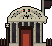
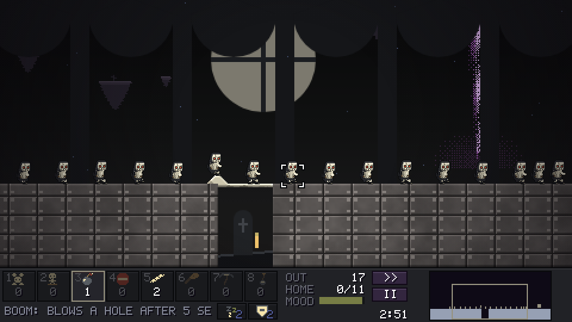
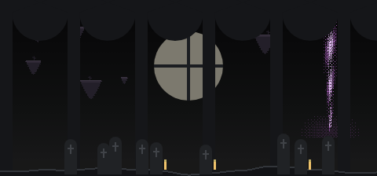

From the journals of the wandering scholar
Of the Skeletons
Home: The cryptsLed by: The Bonelord (of one horde)Substance: Bone DustClans: Greybone and Hollowrib
A Skeleton gets one second chance. Few of them seem to want it.
The horde passed my camp at dawn, in step, looking neither left nor right. Skeletons of every build walked in it; whatever they had been in life, they were now the same pale colour.
Behind them came an Acolyte, robed, with crystal grown through its hands like frost through a fence. It paused where one of the marchers had come apart on a stone, and the bones stood up and fell back into line. I am told this can be done once. After that the bones stay where they lie, or become something else: a wall, a bridge, a step. I crossed a bridge of them later that day. It was well made.
The horde moved as one creature. I have seen that kind of single mind only once before, in a city whose name I —
Skeletons gather into hordes, seemingly driven by magical energies and a demigod’s will. A horde has a collective will that the demigod steers directly.
They are raised from the dead of many races. A skeleton destroyed once can be raised again; after that its existence ends. They can also give themselves up to become part of walls, bridges and temples, which ends them for good.
New skeletons are raised by Acolytes, robed undead with crystals and ores fused into their bodies. The Bonelord is the Acolyte who leads one particular horde; he does not rule all Skeletons.
Not yet settled: the colour of the Acolytes’ crystals, how the Bonelord differs from other Acolytes, and whether Acolytes raise every new skeleton.
As observed in Marching Orders
| In short | Will not stay dead |
|---|---|
| Good at | Bone piles, cannot drown |
| Bad at | Fire destroys them |
| Own skills | Grave walk (spends a pile, raises a troop), Construct (merges 4 into a big fighter), Bone bridge (builds with a nearby pile) |
| Clans | Greybone: +1 bone bridge per map; Hollowrib: construct gets +1 heart |


site/img/journal/race-bone-study.webpFire, I am told, is the only argument they accept.
The Acolyte’s crystals: colour left out of this drawing on purpose.


site/img/journal/race-bone-home.webp